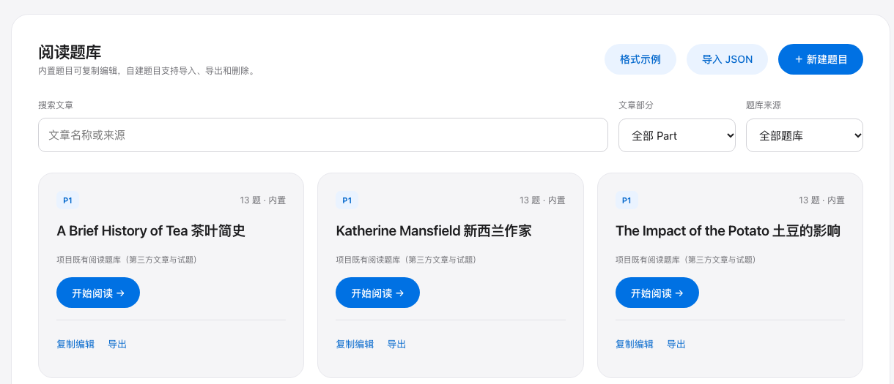
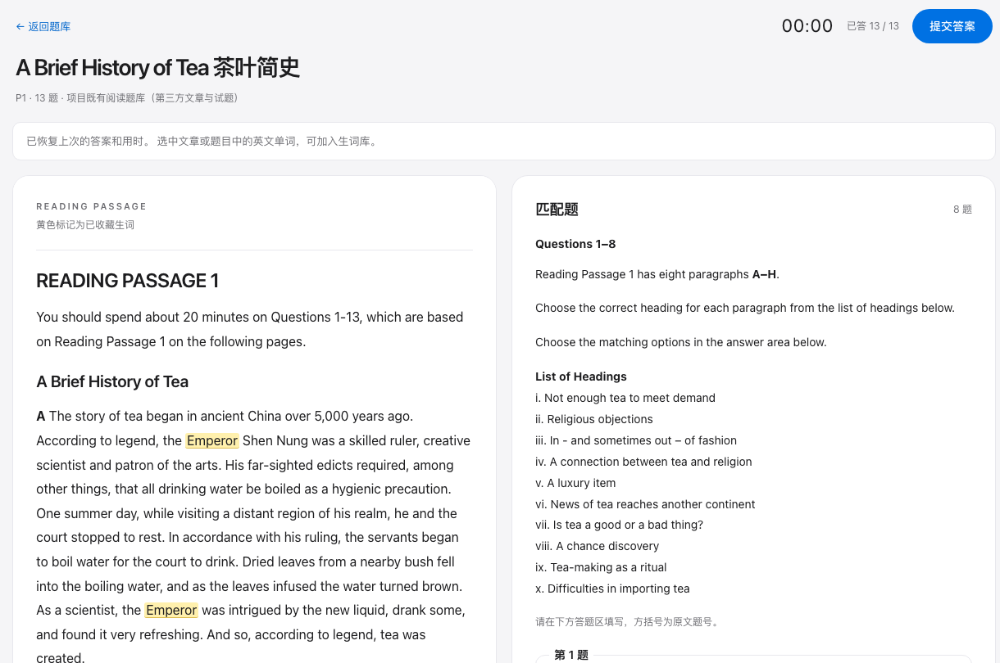
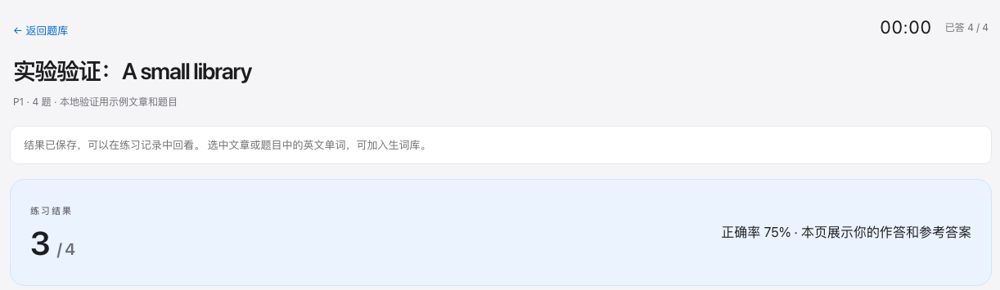
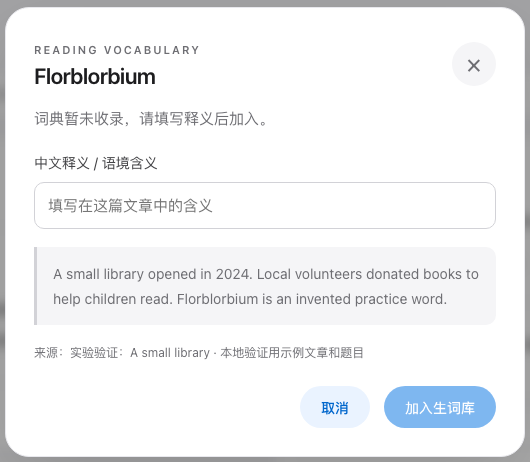
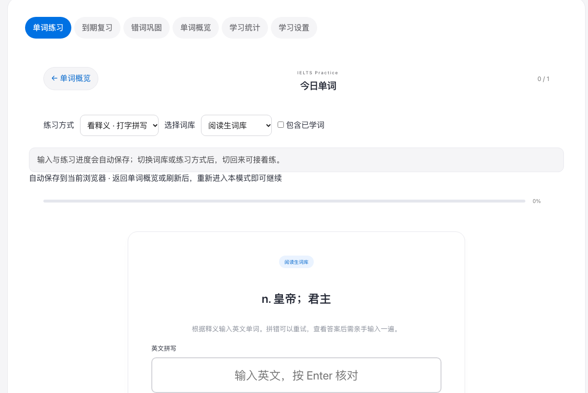
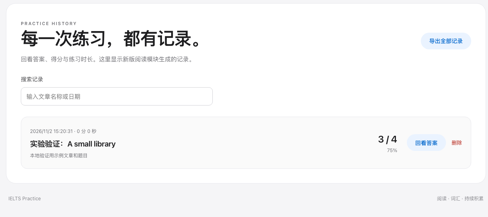
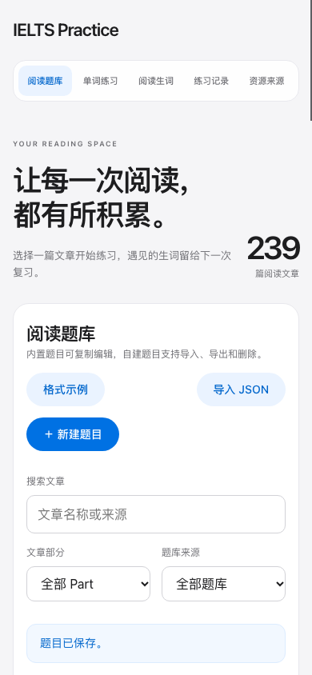
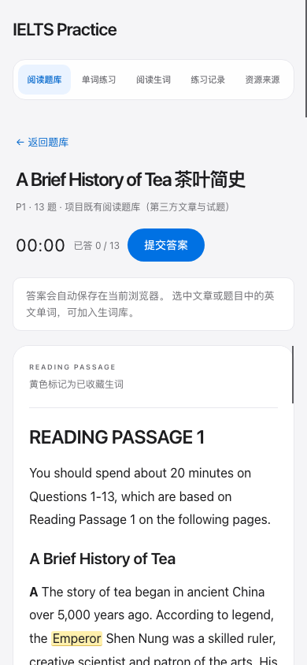

答辩PPT预览成都锦城学院 · 计算机与软件学院
IELTS Practice / 毕业设计答辩
01
基于 Vue 3 与 TypeScript 的
雅思阅读与词汇学习系统
设计与实现
以阅读为入口，让生词进入持续复习。
答辩人：林谦 学号：233020696
班级：2023级前端技术开发方向2班
指导教师：待填写 答辩日期：待填写
READ
阅读训练
文章 · 题目 · 作答
COLLECT
语境收藏
单词 · 释义 · 来源
REVIEW
词汇巩固
拼写 · 复习 · 记录
01 BACKGROUND
选题背景：学习流程分散，生词缺少后续衔接
设计目标：把阅读、收藏和复习连接成一条可持续使用的流程。
IELTS Practice / 毕业设计答辩
02
01
工具切换频繁
阅读题库、词典与背单词工具分开使用，学习流程容易中断。
02
生词容易脱离语境
仅保存单词与释义，往往无法回到最初遇见它的文章。
03
过程记录不连续
未完成答案、练习结果与复习进度，需要统一管理。
核心问题：如何让“这次阅读中的生词”进入“下一次词汇练习”？
02 REQUIREMENTS
需求分析：围绕两条核心业务线组织功能
阅读训练负责理解与反馈，词汇学习负责语境积累与巩固。
IELTS Practice / 毕业设计答辩
03
阅读训练
1
题库检索、Part 筛选与分页
2
文本、判断、选择和匹配答题
3
自动判分、草稿恢复与记录回看
词汇学习
1
阅读选词、本地查词与手动补充
2
保存上下文和来源，原文标记
3
拼写、释义、到期复习和错词巩固
管理支撑：自建题目导入 / 编辑 / 导出，数据校验，响应式页面。
03 ARCHITECTURE
总体架构：页面、业务逻辑与数据分层
新版阅读由 Vue 组件直接渲染，题库与词典按需读取 JSON。
IELTS Practice / 毕业设计答辩
04
展示层
Vue 3 组件
阅读与答题
词汇练习
题库与记录管理
业务层
TypeScript 模块
题目适配与校验
判分与状态管理
选词与词汇联动
数据层
本地与静态数据
文章 / 词典 JSON
草稿 / 题目快照
localStorage
工程支撑：Vite 构建与类型检查 → dist/ → Node.js 静态服务
04 DATA MODEL
数据设计：统一模型，保留语境与历史快照
题目、草稿、结果和阅读生词通过稳定编号关联。
IELTS Practice / 毕业设计答辩
05
ReadingExam
文章编号 · 标题 · 来源
正文 · 题组
QuestionGroup
题组编号 · 题型
说明 · 题目列表
Question
题号 · 选项 · 答案
分值 · 选择数量
ReadingDraft
examId · sessionId
答案 · 累计用时
ReadingRecord
得分 · 日期 · 答案
提交时的题目快照
ReadingWord
单词 · 释义 · 上下文
来源文章 · 收藏时间
以文章编号保存草稿
关键选择：记录保存题目快照，自建题目后续修改不会重写已提交结果。
05 IMPLEMENTATION
题库管理：把内容资源变成可管理的题目
自建题目使用统一 JSON 格式，导入前进行结构与答案校验。
IELTS Practice / 毕业设计答辩
06
01
快速找到文章
关键词搜索、Part 分类和分页。
02
自建与复制编辑
保留内置资源，支持新建、编辑与导出。
03
导入时先校验
检查重复编号、来源、选项与分值。

实际界面截图：题库检索与管理
06 IMPLEMENTATION
阅读交互：作答过程可恢复，内容与控件分离
桌面采用分栏布局；移动端改为纵向阅读与答题。
IELTS Practice / 毕业设计答辩
07
01
文章与题目分栏
左侧阅读，右侧使用新的答题控件。
02
答案自动保存
输入变化时保存草稿，刷新后恢复。
03
过程清楚可见
展示已答数量、用时和提交确认。

07 GRADING
自动判分：规则独立，结果可解释
以统一题目模型计算分值，给出逐题反馈和参考答案。
IELTS Practice / 毕业设计答辩
08
答案规范化
检查可接受答案
多选集合比对
汇总分值与状态
关键规则
文本
统一大小写、全角字符与空格
备选
支持替代写法与可选词
多选
忽略顺序、去重、允许部分得分

示例：1 + 1 + 1 = 3 / 4 → 75%
边界：按参考答案核对，不提供语义近似评分，也不换算 IELTS 等级。
08 KEY FEATURE
阅读生词收藏：把“单词”与“遇见它的语境”一起保存
选词 → 查词 → 调整释义 → 收藏 → 原文标记。
IELTS Practice / 毕业设计答辩
09

01
获取有效选区
只处理阅读区域内的英文单词或短语
02
优先查询本地词典
未收录时允许手动补充语境含义
03
保存上下文与来源
单词、释义、原句和文章编号一起保存
04
收藏后立即标记
在原文提示已收藏单词，方便回看
截图采用虚构测试词，演示词典未收录时的手动输入分支。
09 VOCABULARY LOOP
词汇学习联动：收藏之后，可以继续练习
阅读生词库接入已有单词练习与复习调度。
IELTS Practice / 毕业设计答辩
10

1
阅读生词库
保留含义、语境与来源
2
拼写 / 释义记忆
从阅读理解转为主动回忆
3
到期复习 / 错词巩固
根据练习表现安排下一次复习
10 PERSISTENCE
练习记录：保存的不只是分数，还有当时的题目
使用会话编号去重，保留答案、用时、来源和题目快照。
IELTS Practice / 毕业设计答辩
11

01
结果可回看
已提交答案以只读方式展示。
02
快照保留历史
自建题目修改后，旧记录保持原样。
03
同会话不重复
再次保存时按 sessionId 更新。
实际界面截图：示例练习记录与回看入口
11 ENGINEERING
可靠性处理：在数据进入、展示和保存时分别约束
将可预见的错误转换成明确提示，保留用户对学习数据的控制。
IELTS Practice / 毕业设计答辩
12
INPUT
导入校验
检查题号唯一性、来源、题型、选项和分值；拒绝不完整题目。
DISPLAY
展示内容过滤
过滤脚本、事件属性与不允许的标签；按白名单保留排版内容。
STORAGE
保存失败提示
保存成功后再反馈；存储不可用时提示用户导出或重试。
工程思路：UI 组件、数据校验、判分函数和持久化分别承担清晰职责。
12 VALIDATION
系统验证：以日志和可复现用例说明完成情况
验证依据为项目已保存的本地测试记录。
IELTS Practice / 毕业设计答辩
13
238
篇文章适配检查
3,199
分题目一致性检查
7
项判分逻辑测试
9
项 HTTP 部署检查
规则测试
规范化、备选答案、边界值
多选顺序、重复值与部分得分
流程验证
刷新恢复、收藏与原文标记
提交回看、词汇联动与题库创建
补充验证
文件导入、词典缺词与手动输入
记录刷新、快照不随题目修改
证据日期：2026-11-02。全量检查验证程序与参考答案一致，不代替对原始试题的学科审定。
13 DELIVERY
部署与适配：完成本地生产构建，覆盖桌面与手机布局
当前交付形态：静态前端资源 + Node.js 静态文件服务。
IELTS Practice / 毕业设计答辩
14
构建
npm run build
数据准备 → 类型检查 → 打包
启动
npm start
Node.js 提供 dist/ 资源
访问
浏览器打开服务地址
题库与词典按需加载


实际手机视口：390 × 844
已验证本地生产运行；尚未验证公网部署、并发负载与长期稳定性。
14 SCOPE & SOURCES
实现范围与资源来源：说明新增功能，也说明复用基础
系统设计与功能实现、文章与题目内容，是不同层面的工作。
IELTS Practice / 毕业设计答辩
15
本次重新实现 / 整合
阅读界面、题库管理与数据适配
答题交互、判分与练习记录
阅读选词收藏及词汇学习联动
统一界面、类型检查与流程验证
沿用内容 / 工程基础
既有阅读文章、题目和参考答案
IELTS 核心词汇与 ECDICT 数据
原有单词练习与复习基础
已有 Vue / Vite 工程及静态服务
实现说明：代码生成与修改有编程工具辅助；个人贡献按实际参与的需求、调试与验收说明。
资源：github.com/sallowayma-git/IELTS-practice · github.com/skywind3000/ECDICT
15 LIMITATIONS
不足与后续计划：从本地可用，走向更完整的数据服务
下一阶段优先完善数据可迁移性，再扩大使用与验证范围。
IELTS Practice / 毕业设计答辩
16
本地存储边界
数据依赖当前浏览器与访问地址
优先：旧版数据迁移与备份恢复
尚无跨设备同步
当前没有账号与云端数据库
后续：账号、数据服务与同步策略
测试覆盖有限
尚缺长期、压力与多浏览器验证
后续：异常场景和兼容性测试
内容质量待核实
参考答案一致不代表试题已审定
持续：补充原始出版物与来源核验
16 SUMMARY & Q&A
IELTS Practice / 毕业设计答辩
17
让每一次阅读遇见的生词，
成为下一次练习的起点。
已打通：阅读答题 → 选词收藏 → 词汇复习 → 记录回看
感谢各位老师，恳请批评指正。
演示建议：打开文章 → 收藏一个单词 → 回看结果并进入词汇练习
APPENDIX / 备用页
答辩备问：为什么这样设计？
可在问答环节使用，不必逐条朗读。
IELTS Practice / 毕业设计答辩
18
为什么使用 Vue 3 与 TypeScript？
组件组织交互界面，响应式状态管理作答过程；类型模型约束题目、答案和记录。
为什么先选择 localStorage？
适合本地学习原型，部署简单；容量与同步能力有限，后续可迁移至 IndexedDB 或服务端。
如何说明自动判分可靠？
用纯函数测试、全量参考答案一致性和浏览器流程验证；不扩展为未经验证的语义评分。
内容和实现是否全部原创？
文章、题目和词典复用既有资源；阅读业务代码重新实现，编程工具辅助情况据实说明。